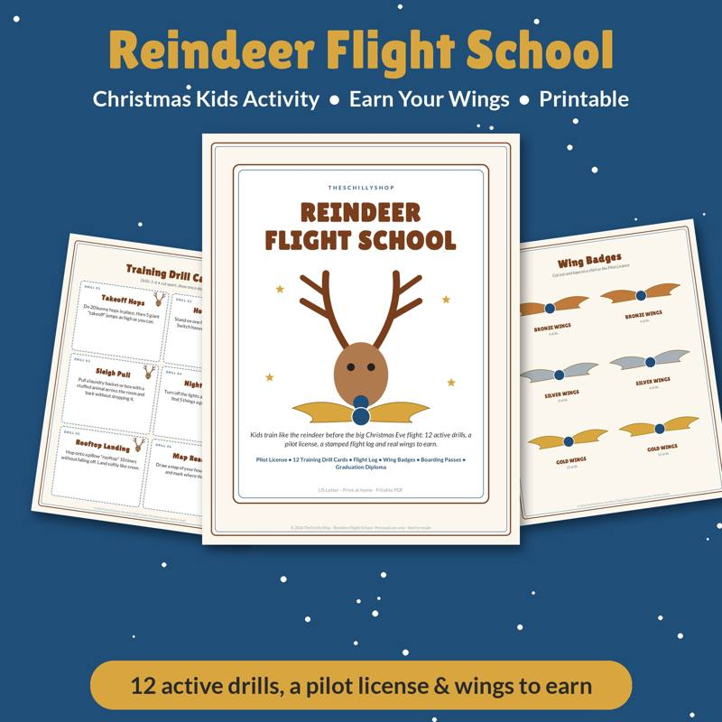

Snow Day Activities for Kids: 30 Ideas Indoors and Out
A snow day is magic for kids and a scramble for parents. The morning starts with cheering and can end in cabin fever by lunch. Having a list of ideas ready means you can pull one out the minute someone says "I'm bored." Here are thirty ideas, sorted so you can match the activity to the weather, the energy level and the time of day.
Outdoor snow activities
When the snow is good, get outside early while energy is high and before the snow gets trampled.
- Build a snow family. Snowmen are classic, but a whole family — including a snow pet — is better.
- Snow painting. Fill spray bottles with water and a few drops of food coloring. Kids "paint" the snow.
- Snow fort. Pack snow into a plastic storage bin or bucket for building bricks.
- Snow angels contest. Who can make the cleanest angel?
- Animal track hunt. Look for bird, squirrel, rabbit or deer tracks. Try to identify them.
- Snowball target practice. Draw a target on a fence or tree with colored water and aim.
- Snow maze. Stomp a maze into a fresh, flat area of yard, then chase each other through it.
- Frozen bubbles. On very cold days, blow bubbles and watch them freeze. (Works best well below freezing.)
- Sledding. Find a safe hill away from roads, trees and water.
- Snow excavation. Bury small plastic toys in snow and let kids dig with spoons and brushes.
Safety reminders
- Dress in layers with waterproof outer layers, hats, mittens and boots.
- Come inside every so often to warm up, especially for younger kids.
- Watch for signs of frostbite — numbness, pale or hard skin — and come in right away if you see them.
Indoor play ideas
- Blanket fort. Couch cushions, chairs, sheets and clothespins. Add a flashlight and books.
- Indoor snowball fight. Use rolled-up white socks or crumpled paper.
- Living room obstacle course. Pillows to hop on, a hallway crawl, a balance line made of tape.
- Hide-and-seek. A classic for a reason.
- Dance party freeze. Play music, stop it randomly, everyone freezes.
- Indoor scavenger hunt. Write clues or give a list: something red, something soft, something that starts with "S."
- Board game marathon. Let kids choose the order.
- Puppet show. Socks or paper bags make easy puppets.
Science and learning activities
- Melting experiment. Bring in three cups of snow. Add salt to one, sugar to another, nothing to the third. Which melts fastest?
- Snowflake observation. Chill a piece of black paper outside, catch flakes on it, and look at them with a magnifying glass.
- Snow measuring. Measure snow depth in a few spots. Then melt a cup of snow and see how much water it makes.
- Ice ornaments. Freeze water with berries, leaves or pine needles in a muffin tin with a loop of string. Hang outside.
- Snow volcano. Build a snow mound around a cup, add baking soda and colored vinegar.
Crafts
- Paper snowflakes. Fold, cut and hang them in the windows.
- Pinecone bird feeders. Peanut butter (or a sunflower-seed spread for nut-free homes) and birdseed on pinecones.
- Salt dough ornaments. Flour, salt and water — bake, paint and save.
- Winter collage. Cotton balls, glitter and blue paper.
Calm-down ideas for the afternoon
- Hot cocoa bar. Marshmallows, whipped cream, sprinkles and candy canes.
- Read-aloud and audiobook time. Snuggle under blankets.
- Movie afternoon. Popcorn and a winter-themed movie.
The "boredom bank" trick
Kids often struggle to choose an activity on their own, and parents get tired of suggesting things. A boredom bank solves this: write activities on slips of paper or cards, put them in a jar, and when someone says "I'm bored," they draw a card and do whatever it says — no negotiating. Mix outdoor, indoor, creative and calm activities so the jar works on any kind of day. You can also include "wild cards" like "pick any activity" or "help make lunch."
If you'd rather print than write, our Snow Day Boredom Bank is a ready-made deck of draw-a-card winter activities designed for exactly this.
Activities for the holiday season
If your snow day happens in December, lean into the holiday theme:
- Decorate cookies or a gingerbread house.
- Write letters to family or to Santa.
- Make holiday cards for neighbors.
- Do "reindeer training" — running, jumping and flying games in the yard or living room. Our Reindeer Flight School activity pack turns this into a full mission with printable certificates.
A sample snow day schedule
- Morning: outdoor play while snow is fresh.
- Late morning: warm-up with cocoa and a craft.
- Lunch: let kids help make grilled cheese or soup.
- Afternoon: science experiment or indoor obstacle course.
- Late afternoon: quiet time, reading or movie.
- Evening: board games.
A snow day doesn't need to be planned down to the minute — the freedom is part of the fun. But having a few ideas ready can turn a long day indoors into a memory. Looking for more family ideas? Read our family chore system guide or New Year's Eve family traditions.

A draw-a-card stash of winter break and snow day activities for kids.
See it on Payhip
Shop the printables mentioned
Snow Day Boredom Bank
A draw-a-card stash of winter break and snow day activities for kids.
View on Payhip
Reindeer Flight School
A Christmas reindeer training activity pack for kids.
View on PayhipMore guides
- Baby Shower Prediction Game Ideas (and How to Run Them)
- Bridal Shower Games That Aren't Cringe
- Chili Cook-Off Rules and Scoring: A Complete Host Guide
- Christmas Party Games for Adults (No Supplies Needed)
- Cookie Exchange Party Ideas: How to Host a Christmas Cookie Swap
- A Family Chore System That Actually Works
- Galentine's Party Games Your Friends Will Actually Love
- The Meal Planning Game: How to Get Your Family to Help Plan Dinners
- New Year's Eve Family Traditions Kids Will Love
- Teacher Gift Ideas From the Whole Class (Thoughtful and Budget-Friendly)
- Thanksgiving Kids Table Activities That Keep Them Busy
- Ugly Sweater Contest Ideas: Categories, Judging and Fun Twists
- Vacation Rental Cleaning Checklist: Room-by-Room Turnover Guide
- Valentine's Escape Room for Couples at Home: How to Set One Up